Measuring Temperature Humidity and Atmospheric Pressure#

Click on the “OLED” drawer in the Toolbox.

Select the initialize OLED block.

Place the initialize OLED block in the on start block. This only needs to run once. Do not change the dimensions.

Click on the “Weatherbit” drawer in the Toolbox.

Select the start weather monitoring block.

Place the start weather monitoring block in the on start block. This code only needs to run once.

The forever block can be moved.

It is now unobstructed.
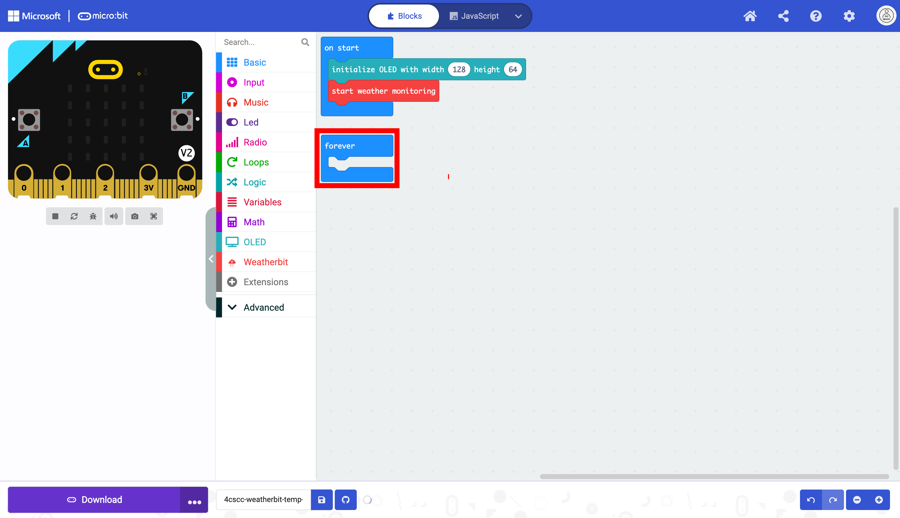
Click on the “OLED” drawer of the Toolbox.
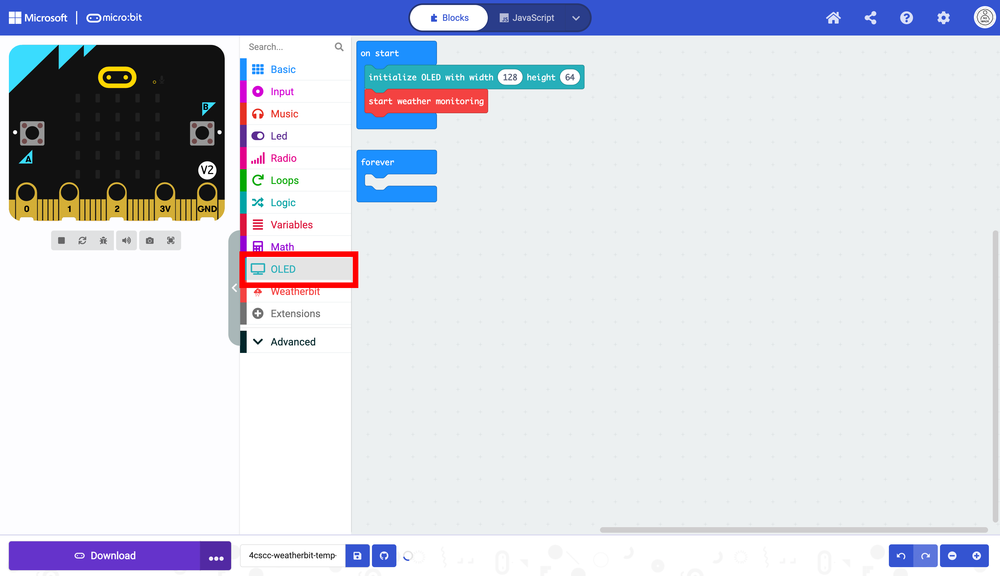
Select the show string block.

Place the show string block in the forever block.

We now need to format the strings as in the previous lesson. Click on the “Advanced” drawer of the Toolbox.
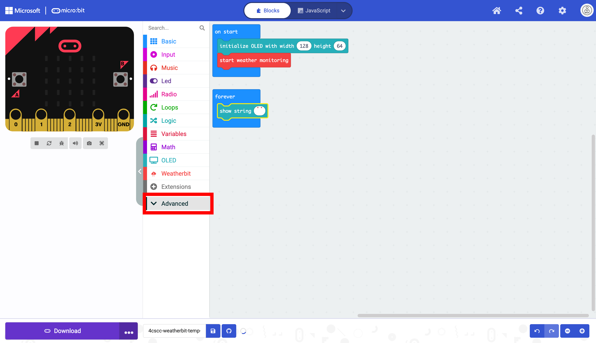
Click on the “Text” drawer.
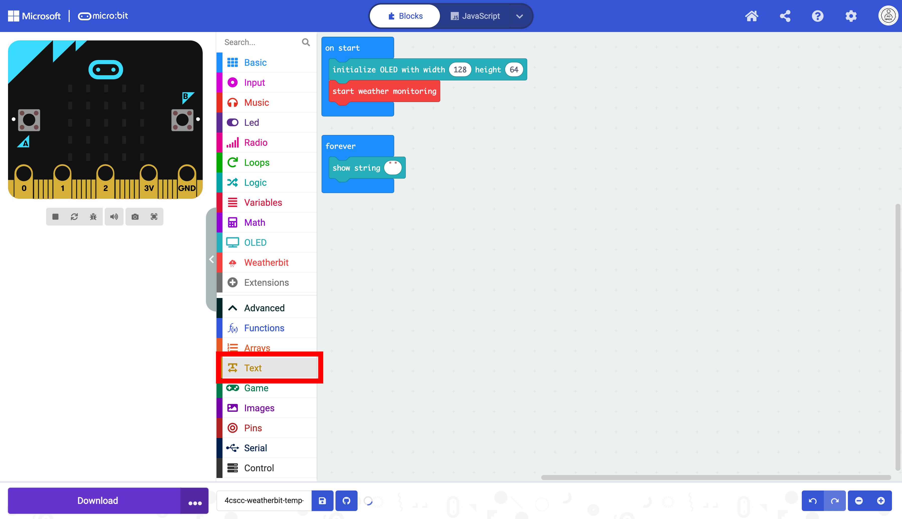
Select the join block.
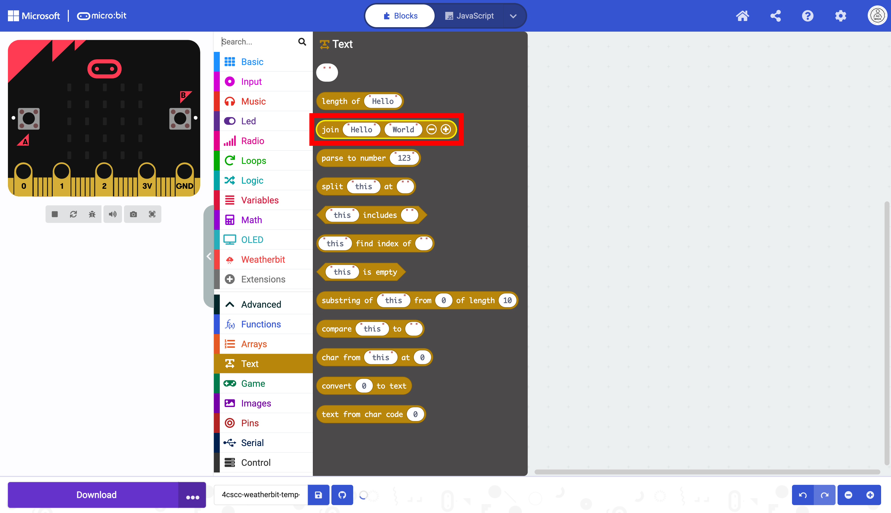
Place the join block in the show string block.

The data the micro:bit we will be reading is temperature data in celsius, relative humidity and atmospheric pressure. Temperature data is often displayed with the C at the end to indicate that the reading is in celsius. Relative humidity is a percentage and is often followed by a %. Atmospheric pressure is often measured in Kilopascals (kPa).
The data will need to be represented as three separate strings.
Sting 1 |
String 2 |
String 3 |
|---|---|---|
|
|
|
|
|
|
|
|
|
This will require a third string. Add another sting box with the + button.

Clear the text in all three ovals to create empty strings.

Duplicate the box that displays text twice.

Select the two duplicated blocks.
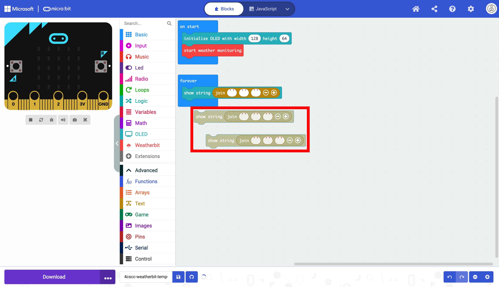
Place the blocks in the forever block below the other block as displayed below:

Enter the data as determined above. Notice that there are spaces called whitespace. These spaces are necessary to have the Data display correctly.
Sting 1 |
String 2 |
String 3 |
|---|---|---|
|
|
|
|
|
|
|
|
|

Some calculations must be performed for the data to display correctly. Click on the “Math” drawer of the Toolbox.

Select the square root block.
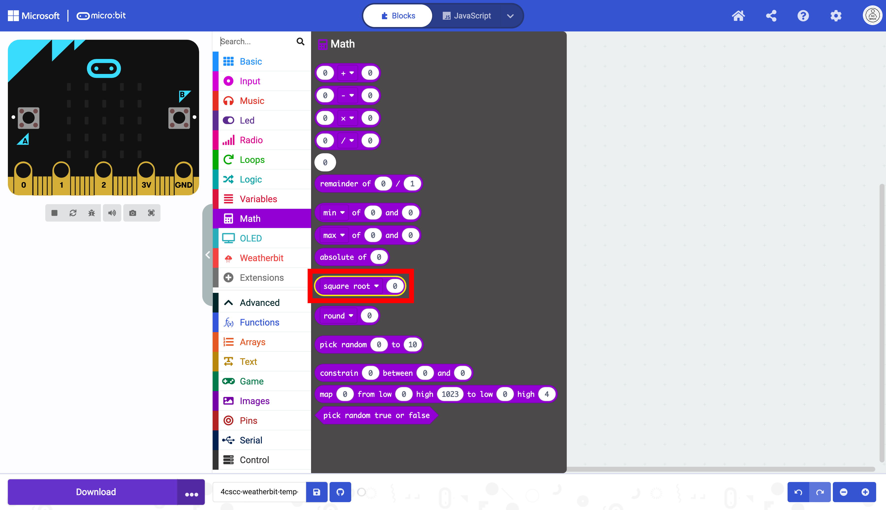
Place the square root block on the workspace. This is not the calculation that will be performed. You will select another operation from the dropdown menu.

Click on the integer \ block. This operation will return a value without rounding and without a decimal value.

This block will change. Notice that there are now two places for values.

Duplicate block twice.

Select the blocks one at a time.
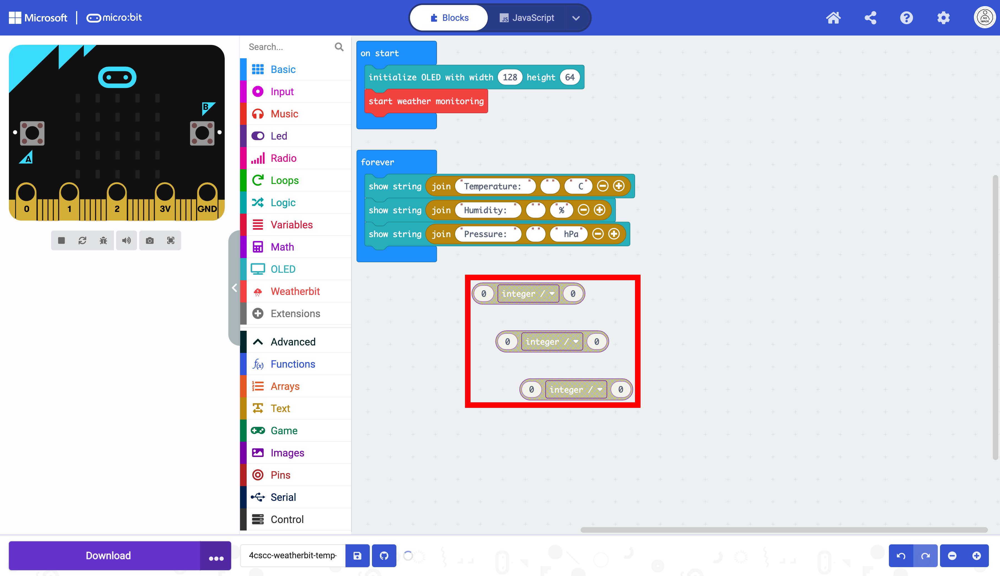
Place the blocks in the part where the data sill be in the join block.
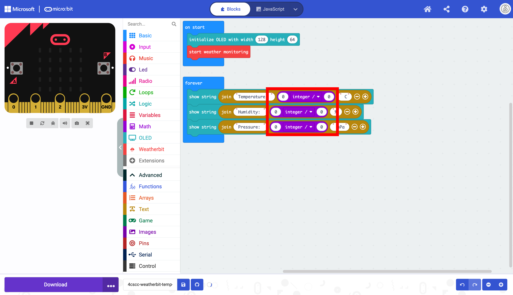
Now you will add the blocks to collect the data. Click on the “Weatherbit” drawer of the Toolbox.
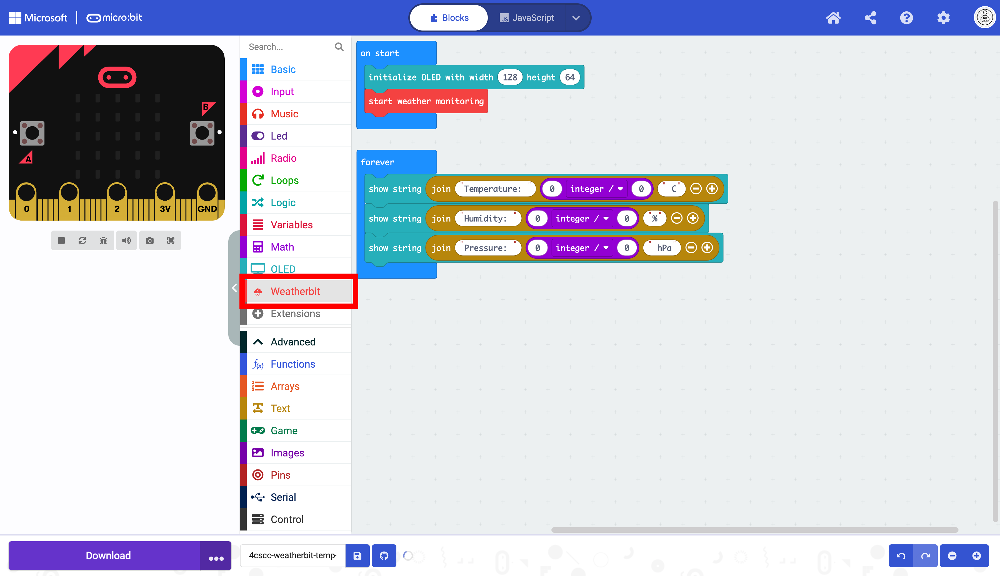
Select the temperature, humidity, and pressure blocks.
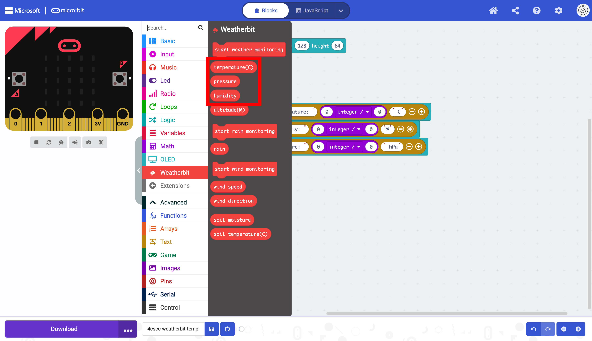
Place them in the corresponding text fields. Make sure that the Read Pressure in block is the dividend of the division block.

To calculate the temperature correctly, change the 0 to 100.
This will now display the temperature correctly in celsius.
To calculate the temperature correctly, change the 0 to 1024.

This will now display the humidity correctly.
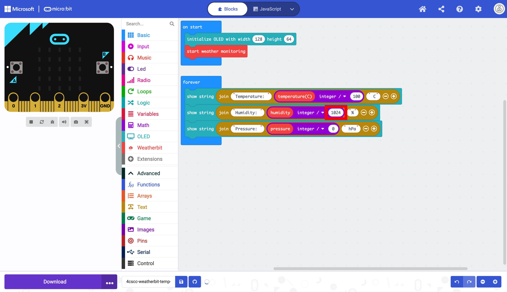
To calculate the pressure correctly, change the 0 to 25600.

This will now display the pressure correctly.

As in the previous section. You need to stop the OLED from repeating the data. Click on the “Basic” drawer of the Toolbox.

Select the pause block.
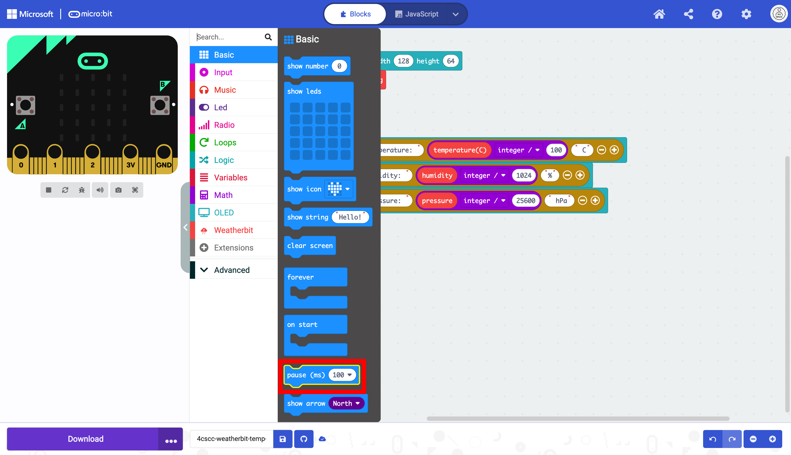
Place the pause block below the show string blocks in the forever block.

Change the pause to 5 seconds in the dropdown menu.

Click on the “OLED” drawer of the Toolbox.

Select the clear OLED display block.

Place the clear OLED display below the pause block in the forever block.
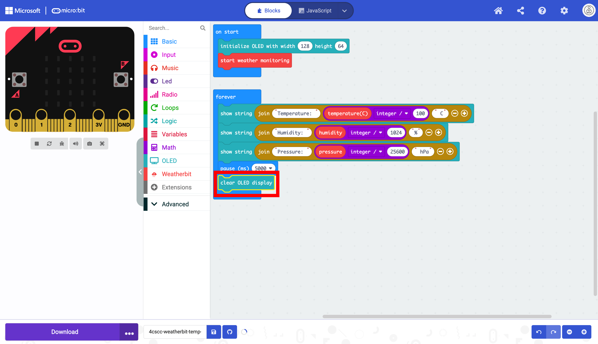